| 日付 | 2026年7月11日（土） |
|---|---|
| 山域 | 奥秩父 |
| メンバー | 家族（妻） |
| 山行形態 | 日帰り |
| アクセス | 車 |
| ルート (Map) | 金峰山荘 (8:12) - (9:10) カモシカ登山道分岐点 - (10:42) 小川山 - (12:33) 大日岩 (13:16) - (13:35) 分岐点 - (14:08) 中ノ沢出合 - (15:02) 金峰山荘 |
小川山は奥秩父にある比較的マイナーな山だ。
麓の岩峰群は有名で多くのクライマーを集めているが、
山自体は地味で登る人が少ない。
今回、地味な小川山と展望広がる大日岩を結んで歩いてみることにする。
車でのアプローチ中に、岩々した地形が見えてくる。
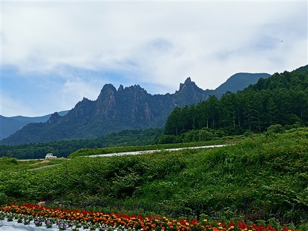
廻り目平の広大な駐車場に車を停める。標高1570m。
周囲を見渡すと、あちらこちらに岩峰が見える。
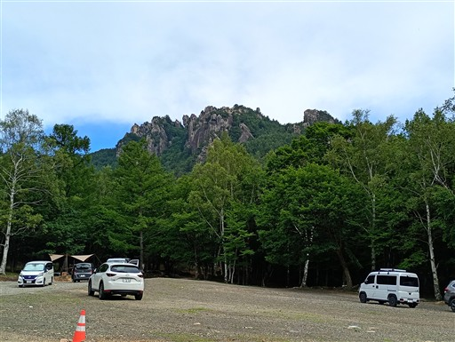
金峰山荘。キャンプ場の受付などができる。宿泊も可。
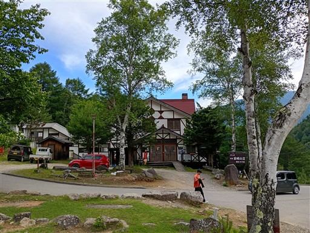
登山口に向かって車道を歩いていく。
ここは金峰山にも続く道なので金峰山の標識があり、小川山の字は見当たらない。
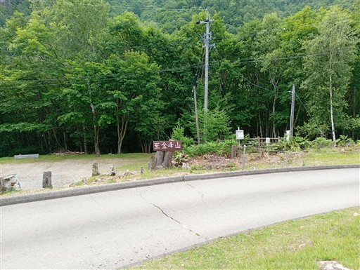
岩峰群を眺めながら歩いていく。周囲はロッククライマーの姿が多い。
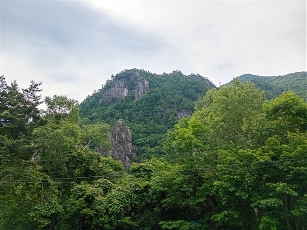
小川山登山口に到着。
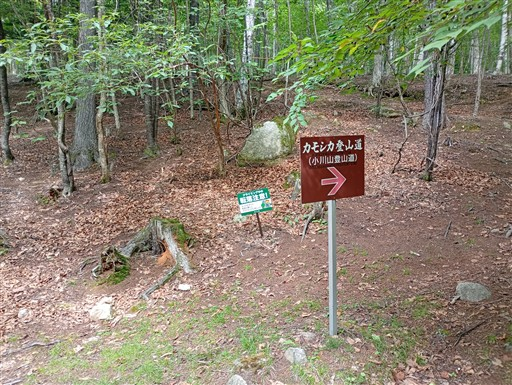
緩やかな傾斜の道から始まる。
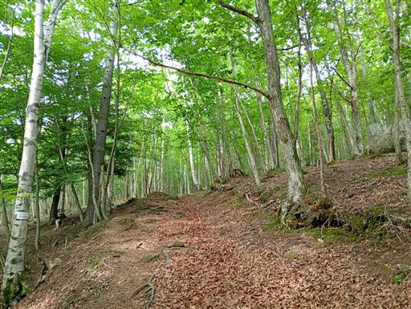
登山道を少し外れたところから、素晴らしい展望が広がる。
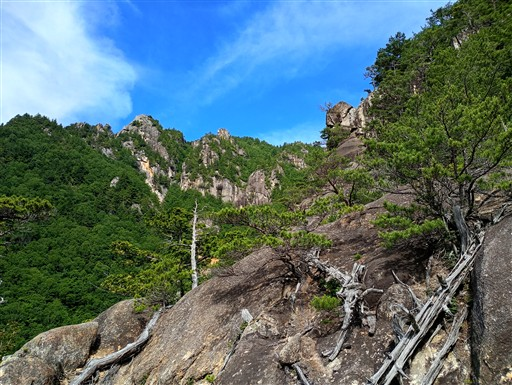
こちらは金峰山。遥か高く聳えている。
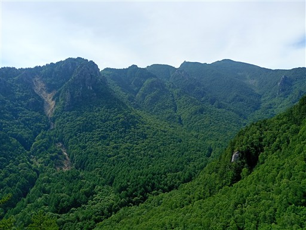
登山道の側にシャクナゲの花が咲いている。
もう花は終わりかけだが、シャクナゲの木が多い。
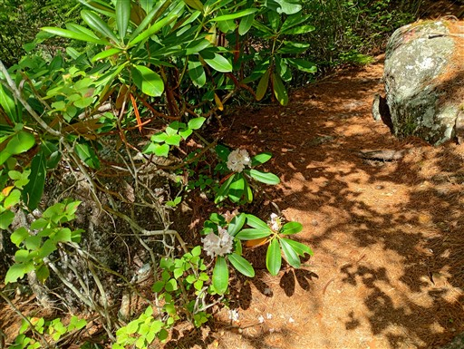
標高を上げると再び展望が広がる。
先ほど見た岩と同じ岩だが、角度が異なると見え方も異なる。
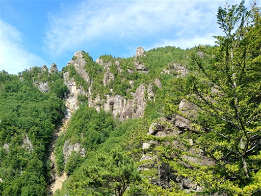
登山道は分かりにくい所が多いが、赤ペンキが随所にあるので助かる。
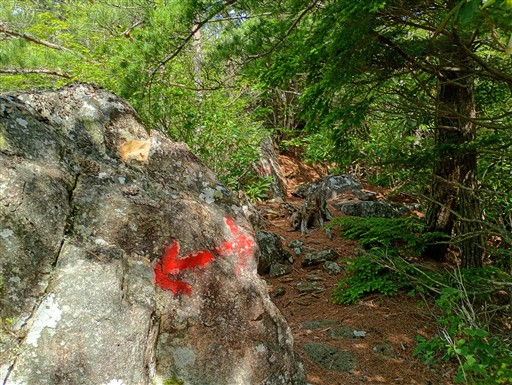
一角の展望が広がる。恐らく甲武信ヶ岳方面。
本日は雲が多いがそこそこ視界が広がる。
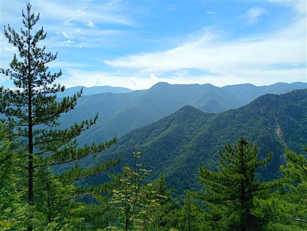
シャクナゲなど奥秩父らしい樹林帯が広がる。
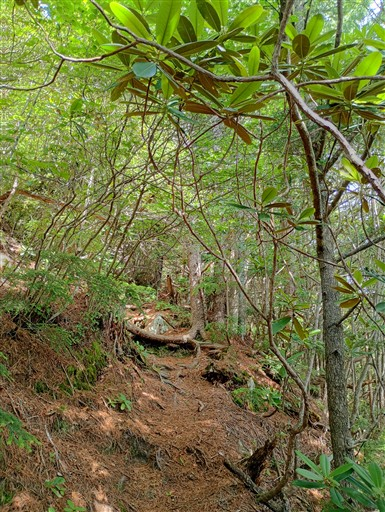
ハシゴが出てくる。この辺りから登山道の難易度が上がる。
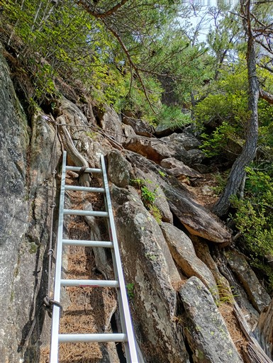
岩尾根を越えていく。
上級者コースらしいが、そこまで難易度の高い場所は出てこない。
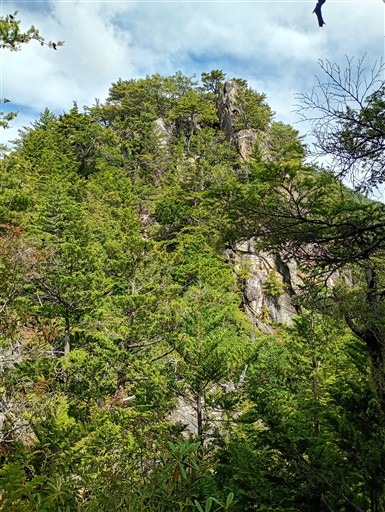
唐沢の滝からの登山道と合流する。
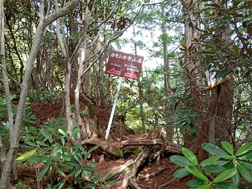
ここからもしばらくは岩尾根が続く。
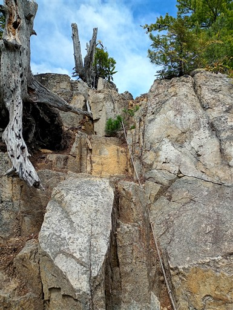
途中から樹林帯の中の道が延々と続く。
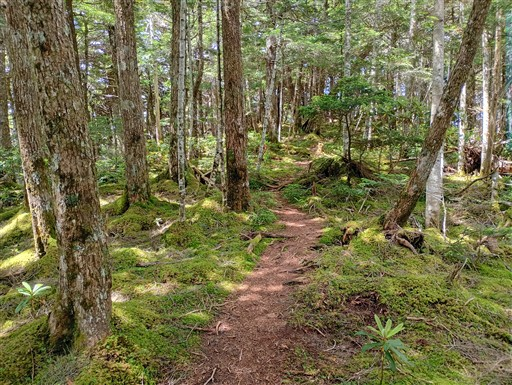
コケの森の中に小さなシャクナゲが生えている。
あと10年もしたらここもシャクナゲの藪になるのかもしれない。
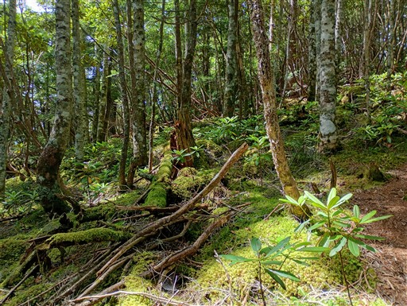
稜線に到達したら小川山まではすぐだ。
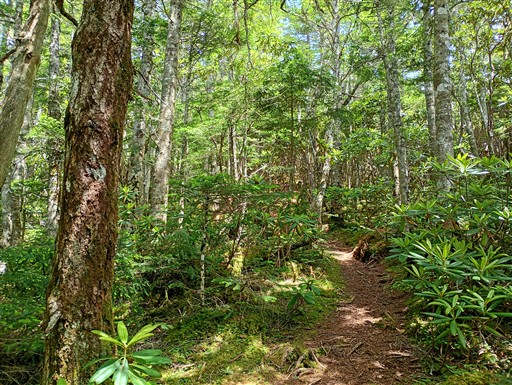
小川山に到着。標高2418m。
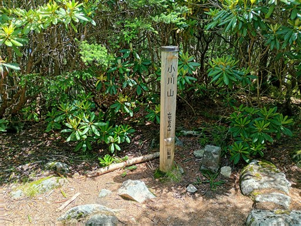
小川山が地味な理由はこれ。全く展望が広がらない。
頑張って遠景の写真を撮ってみる。
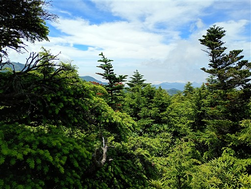
ここから大日岩に向けて尾根を歩いていく。周囲はコケだらけ。
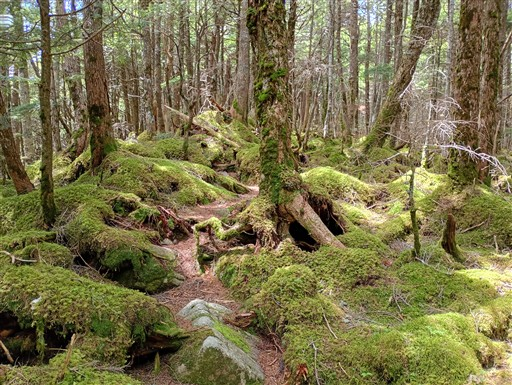
ところどころで展望が広がる。正面の金峰山が大きい。
山頂に五丈岩があるので山座同定が楽だ。
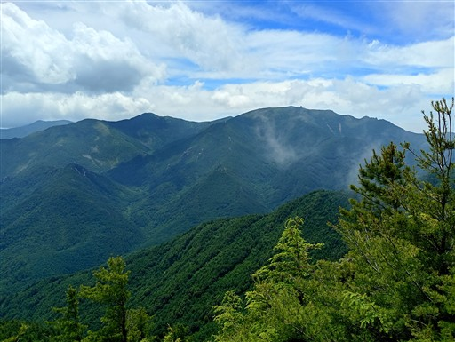
木が密集した森。登山道が細い。
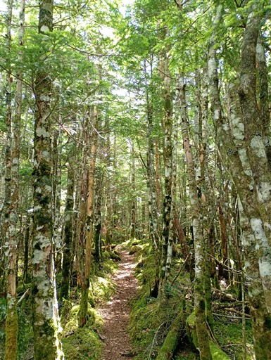
木の幹にコケが生えている。
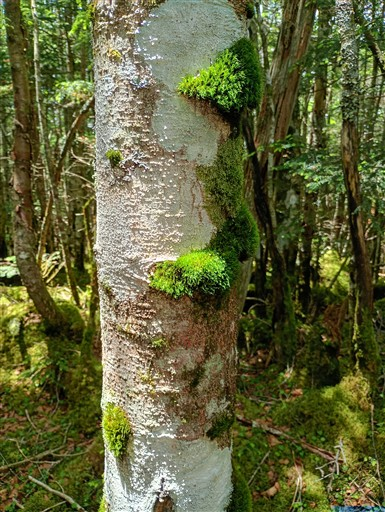
二種類のコケが混ざって生えている。
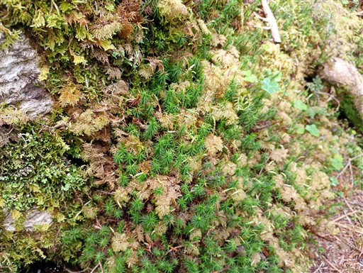
瑞牆山に続く稜線は木で塞がれているが、踏み跡があり標識もある。
どんな道なのだろう？
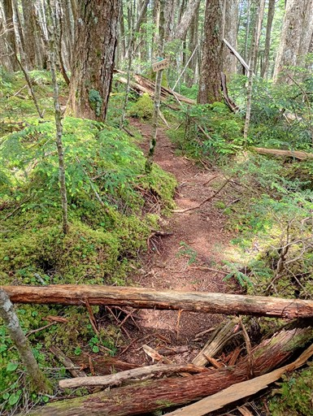
岩と岩の隙間をジャンプ。面白い登山道だ。
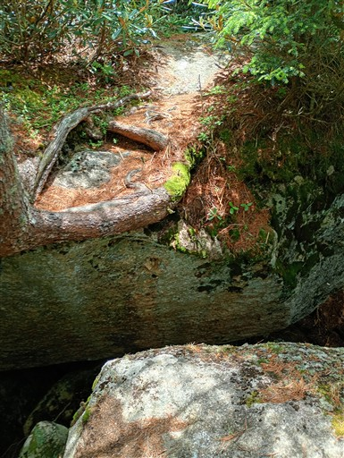
大きな岩に突き当たる。大日岩か？
直登したくなるが登山道は右から巻いているので、大人しくそれに従う。
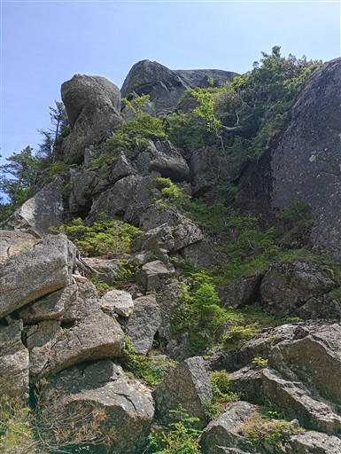
大日岩の基部に到着。先ほど直登しようかと考えた岩は背後の岩。
登っても先には通じておらず、下りられそうにないので登らなくてよかった。
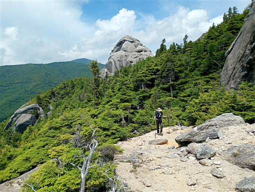
近くに瑞牆山がよく見えている。
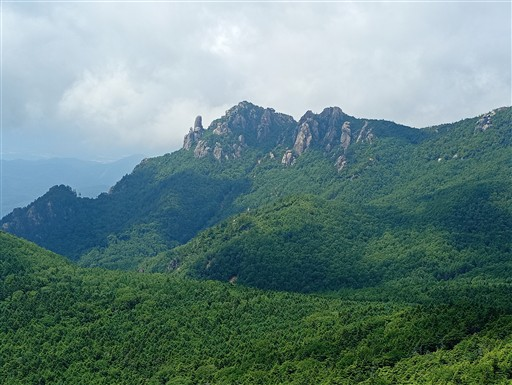
大日岩は花崗岩の塊だ。
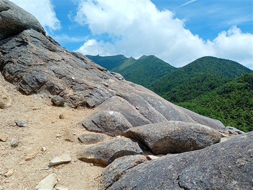
頭上を見上げる。何とも形容のしようがない形の岩だ。
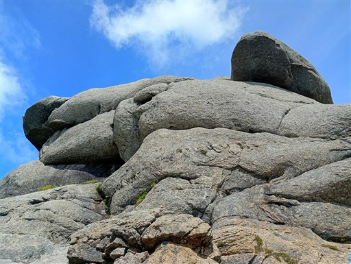
この登山道、楽しい。岩の上を自由に歩ける。
ちょっと難易度が高いので登山者を導く白点がある。
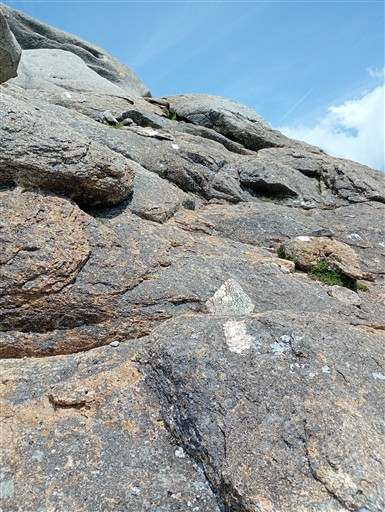
そして目の前に金峰山が現れる。こちらから見る金峰山も格好良い。
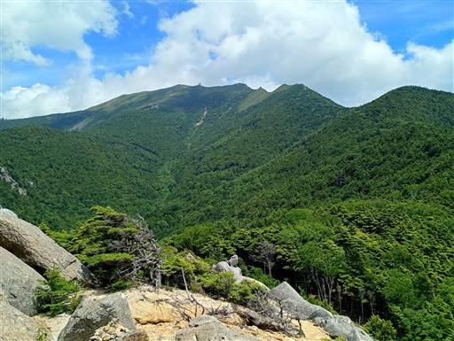
大日岩に登ってみる。スラブ壁だが傾斜の緩い場所を探して登っていく。
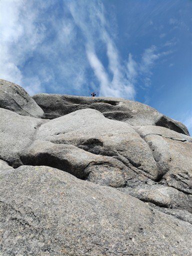
ここが天辺。
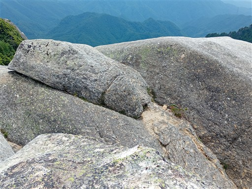
360度の素晴らしい展望が広がる。真ん中が先ほど登った小川山だ。
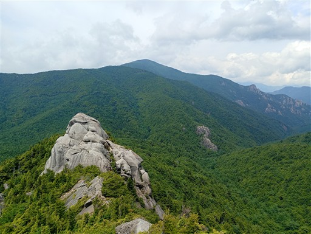
廻り目平近辺の岩峰群。
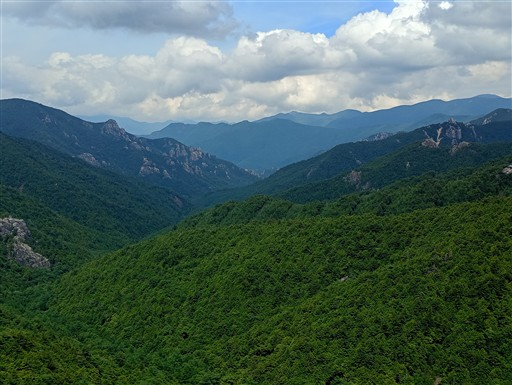
地図を見ると、大日岩はもう少し先と出ている。岩を下りて先に進む。
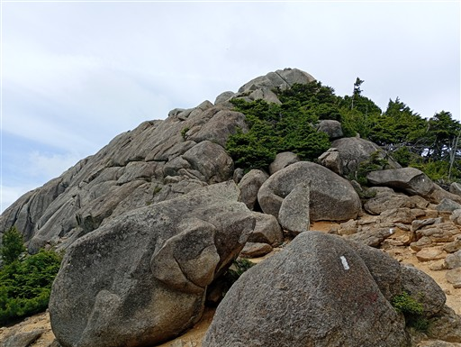
岩場にハコネコメツツジが咲いている。
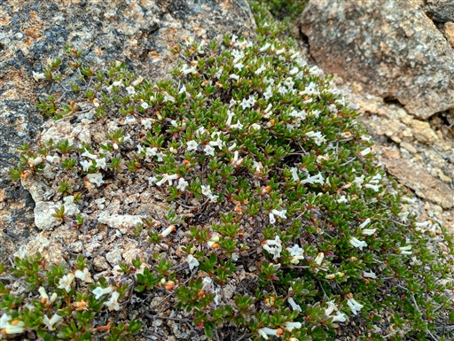
辿り着いたのは富士見平～金峰山の登山道との合流点。
正確にはここは大日岩分岐点だ。
多くの登山者が通るルートなのだが、ここから大日岩に足を伸ばす人は驚くほど少ない。
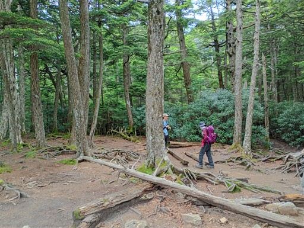
大日岩のテラスに戻ってきておやつ休憩をとる。
瑞牆山の左に八ヶ岳が見えている。
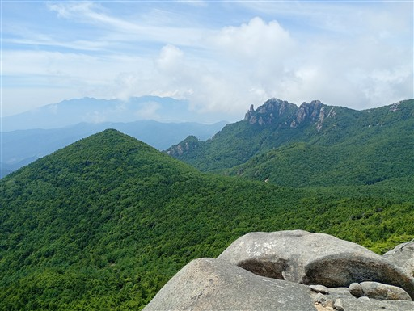
こちらは南アルプス。背後に雲に隠れながらうっすらと見えている。
この大日岩はすごく気に入った。展望が良いし、人が少ないし、岩登りも楽しい。
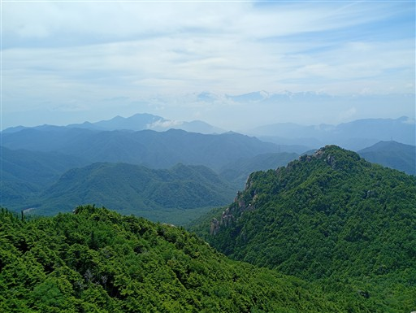
満喫したら元来た道を引き返す。砂がある場所は滑るので慎重に下る。
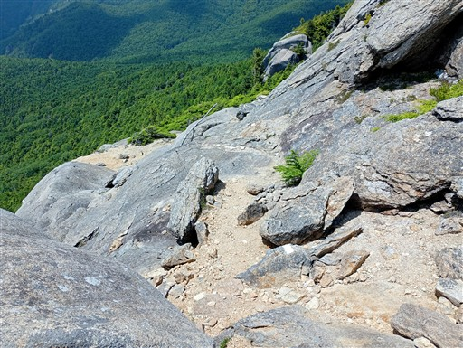
下りきった場所は廻り目平への下山道との分岐点。
ここから沢沿いの道を下っていく。
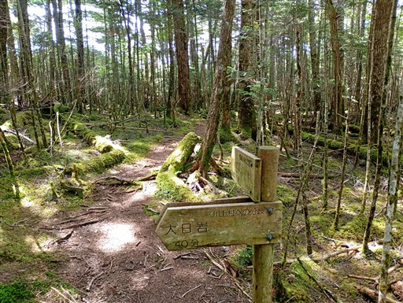
少し下るとすぐに沢が出てくる。
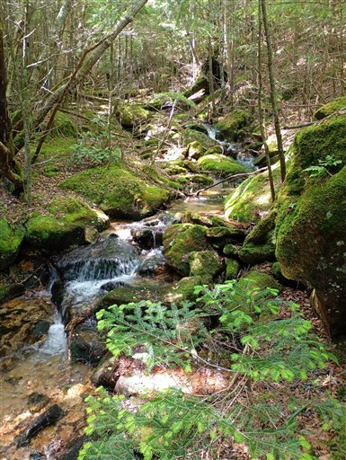
ナメ滝。
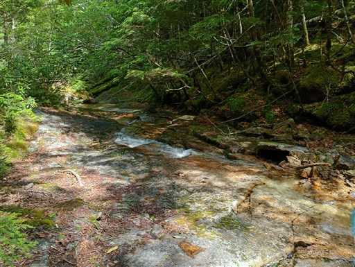
ほんの少しだけ沢のすぐそばを歩ける。
大きな滝はないが、明るく開けた開放的な沢で遡行すると楽しそうだ。
コケの中に目立つキノコが生えている。
中ノ沢出合に下りてくる。廃車が放置されている。
ここは金峰山からの道との合流点だ。
あとは1時間ほどの車道歩き。
沢の水はとてもきれい。そこそこの水深がありそうだが底まできれいに見えている。
クライミングをしている人がいっぱいいる。
キャンプ場まで戻ってくる。多くのテントはクライマーのものだろう。
岩登りマップ。本当に様々なコースがある。
小川山は確かに地味な山だったが、登りの道の前半は変化があって楽しかったし、
その後の樹林帯歩きも奥秩父らしい景色が広がって味わい深かった。
大日岩は絶好の展望台で、何度も足を運びたくなるような良い場所だった。